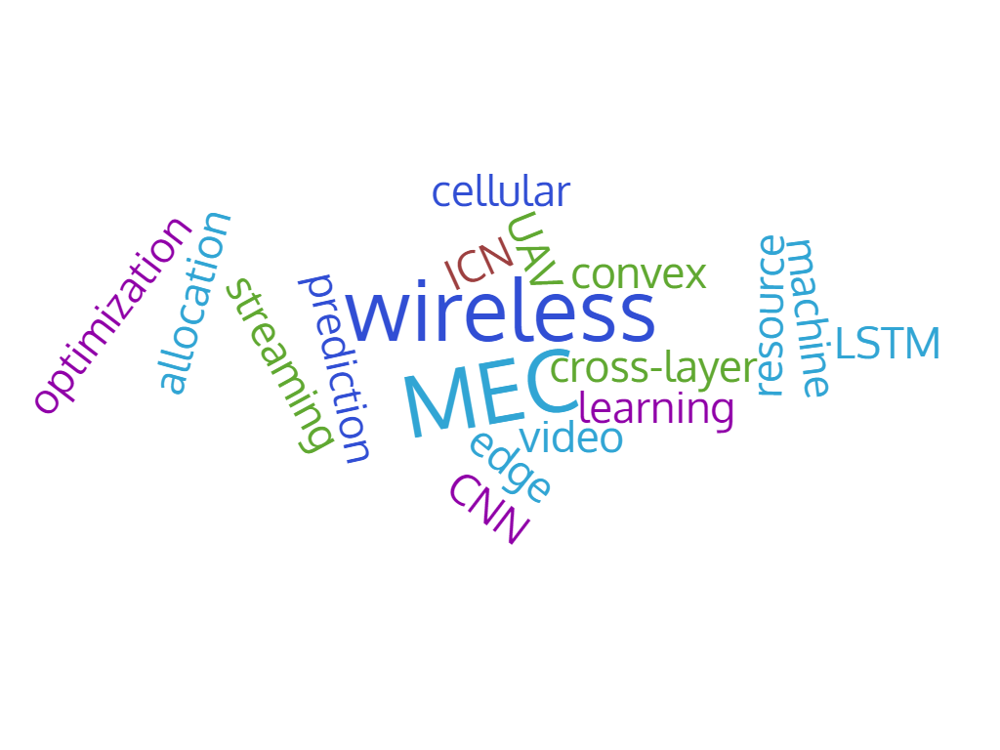

劉 研究室 ようこそ！ Welcome to the Multimedia Networking Lab!
|  | 劉志 准教授 電気通信大学 情報・ネットワーク工学専攻 連絡先 〒182-8585 東京都調布市調布ヶ丘1-5-1 東2号館6１1室 Tel: 042-443-5670 E-Mail: liuzhi[at-mark]uec.ac.jp ([at-mark] TO @) (メールアドレスの[at-mark]を@に置き換えてください) |
専門分野
映像ネットワークシステム、エッジコンピューティング（MEC）、IoT、最適化、AI/機械学習を活用したワイヤレスネットワーク
略歴
国立情報学研究所、日本学術振興会（JSPS）特別研究員、早稲田大学、静岡大学を経て, 現在電気通信大学大学院情報理工学研究科所属.
I have been serving or have seved as Editor for IEEE Network, IEEE Transactions on Multimedia, IEEE Transactions on Circuits and Systems for Video Technology, IEEE Internet of Things Journal, IEEE Open Journal of the Computer Society, and Wireless Networks. I have been serving or have seved as guest editor for IEEE Wireless Communications and IEEE Vehicular Technology Magazine
I have been serving as area chair of ACM MM24/MM25, area chair of IEEE ICME23/ICME25, symbosium chair of IEEE Globecom23, TPC co-chair of IEEE Infocom23 NG-OPERA workshop, General co-chair of IEEE ICC23 DDINS workshop, Workshop co-chair of IEEE HPSR22, TPC co-chair of IEEE ICC22 DDINS workshop, Track co-chair of IEEE VTC 2021, TPC co-chair of ICT-DM2021, Poster and demo session co-chair of IEEE MSN2020, etc.
I currently serve as Secretary of IEEE ComSoc Multimedia Communications Technical Committee (MMTC), Web Chair of IEEE Technical Committee on Big Data and Liaison Officer of IEEE Technical Committee on Hyper-intelligence.
I also serve as IEICE ネットワークシステム研究会 専門委員, IPSJ MBL研究会運営委員, IPSJ DPS究会 運営委員
I am the receipt of the IEEE Comsoc TCBD (Technical Committee on Big Data) Outstanding Mid-Career Achievement Award 2024, IEEE Andrew P. Sage Best Transactions Paper Award 2024, IPSJ/IEEE Computer Society Young Computer Researcher Award, IEEE ComSoc MMTC (Multimedia Communications Technical Committee) outstanding young researcher award, 末松安晴賞,学術奨励賞,通信ソサイエティ活動功労賞,ネットワークシステム研究専門委員会活動功労賞. I have received best paper awards from several IEEE conferences.
研究紹介
無線端末の普及により、さまざまな映像データがネットワーク上で転送、共有されています。私の研究室では，無線ネットワークリンクの不安定性を克服し、限られた帯域資源を有効に利用するために、無線ネットワー ク上におけるVRなど没入型映像を含む映像ストリーミングのための最適な資源配分の方法、エッジコンピューティングやエラー復元の方策などについてを取り組んでいます。 特に、以下のような研究を進めています。 注：他のテーマ(MEC、無線ネットワークなど)にも取り組んでいますので、ご興味があればご相談ください。
 |
映像システムの視聴する角度を予測する方法：VRなど没入型映像システムにおいて、視聴する角度を予測するは非常に重要です. これにより、未視聴の映像部分の送信を回避することができます.サーバーはま た、ユーザーが見たい部分の高画質映像を送信することができます。このために, 深層ニューラルネットワークを使って、過去の視聴ログなどを活用して、ユーザの将来の視聴する角度を予測する方法を取り組んでいま す。
映像伝送方法：映像伝送は、映像システムの中で最も重要な部分の一つです。最近完成した映像伝送方式は、モデルベーであります。すなわち、ネットワークとシステムリソースのモデリングが必要です。このため に, 深層強化学習や他のAI技術と最適化理論を使用し、効率的な映像ストリーミングに向けて、新しい映像伝送方法を取り組んでいます。
誤り耐性を有する映像伝送方式：無線ネットワークではパケットロスは避けられないことです。映像システムでは、ビデオフレームは互いに相関関係にあるため、映像システムはこれらのパケットロスに非常に敏感です。 このために, ネットワークに損失が存在する場合における映像の有効な伝送方法を取り組んでいます。
注：他のテーマ(MEC、無線ネットワークなど)にも取り組んでいますので、ご興味があればご相談ください。
関する経費：日本学術振興会JSPS基盤研究（B/C）、JST ASPIRE、国立情報学研究所公募型共同研究など
参考文献
Kaixuan Long, Ying Cui, Chengcheng Ye, Zhi Liu, ”Optimal Wireless Streaming of Multi-Quality Tiled 360 VR Video by Exploiting Natural, Relative Smoothness- enabled and Transcoding-enabled Multicast Opportunities”, IEEE Transactions on Multimedia, in press
Zhi Liu, Jie Li, Xianfu Chen, Celimuge Wu, Susumu Ishihara, Yusheng Ji, Jie Li, ”Fuzzy Logic-based Adaptive Point Cloud Video Streaming,”IEEE Open Journal of the Computer Society, vol. 1, pp. 121-130, 2020
Jie Li, Ransheng Feng, Zhi Liu, Wei Sun, Qiyue Li, ”QoE-driven Coupled Uplink and Downlink Rate Adaptation for 360-degree Video Live Streaming", IEEE Communications Letter, vol. 24, no. 4, pp. 863-867, April 2020.
Celimuge Wu, Zhi Liu, Fuqiang Liu, Tsutomu Yoshinaga, Yusheng Ji, Jie Li, ”Collaborative Learning of Communication Routes in Edge-enabled Multi-access Vehicular Environment,” IEEE Transactions on Cognitive Communications and Networking, in press
Wei Xu, Yuzhuo Wei, Ying Cui, Zhi Liu, ”Optimal Multi-view Video Transmission in Multiuser Wireless Networks by Exploiting Natural and View Synthesis- Enabled Multicast Opportunities”, IEEE Transactions on Communications, vol. 68, no. 3, pp. 1494-1507, March 2020.
詳しくは、[こちらのページ]をご覧ください